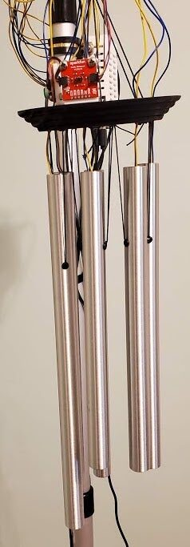

Tremolo-Chimes: Vibration-Motor Actuated Robotic "Wind" Chimes
Tremolo-Chimes: Vibration-Motor Actuated Robotic “Wind” Chimes
Steven Kemper, Mason Gross School of the Arts, Rutgers, The State University of New Jersey
1. PubPub Link
https://nime.pubpub.org/pub/qx2wiy2p/draft?access=p03qslxf
2.Conference Abstract
The Tremolo-Chimes is an interactive performance system that consists of a set of tubular metallic wind chimes that have been modified by removing the striker and wind catcher. MIDI-controlled vibration motors suspended in each chime produce continuous, tremolo-like sounds where the dynamic shape can be controlled over time. This system is inspired by acoustic wind chimes and explores questions about performative agency in automated instruments. The technical approach to the Tremolo-Chimes is based on the author’s Tremolo-Harp instrument. A Teensy 3.2 microcontroller is programmed as a USB MIDI device, enabling MIDI output from a computer to control the vibration motors. Velocity values are mapped to 8-bit PWM values, controlling the intensity of vibration for each chime. The Tremolo-Chimes can be controlled directly using a thumb joystick or configured as an interactive installation. The interactive installation employs multiple control methods, including synthesized wind and sensors that detect the proximity of participants to the chimes. Both synthesized wind and sensor input are fed through a mass-link physical model, evoking the movements of a wind-driven clapper bouncing off of traditional wind chimes. The software that runs the installation is implemented in Pure Data running on a Raspberry Pi.
3.System Description


Figure 1: Tremolo-Chimes
The Tremolo-Chimes (Figure 1) is an interactive performance system that consists of a set of tubular metallic wind chimes that have been modified by removing the striker and wind catcher. MIDI-controlled vibration motors suspended in each chime produce continuous, tremolo-like sounds where the dynamic shape can be controlled over time. This system is inspired by acoustic wind chimes and explores questions about performative agency in automated instruments. The technical approach to the Tremolo-Chimes is based on the author’s Tremolo-Harp instrument.1 A Teensy 3.2 microcontroller is programmed as a USB MIDI device, enabling MIDI output from a computer to control the vibration motors. Velocity values are mapped to 8-bit PWM values, controlling the intensity of vibration for each chime. By design, this approach differs from the mechanical actuation of traditional wind chimes, where the striker randomly hits each chime producing a tone.
The Tremolo-Chimes can be controlled directly by a performer or configured as an interactive installation. Direct control employs a thumb joystick controller and was designed for performance by the Rutgers Interactive Music Ensemble. In this mode a thumb joystick controls the vibration intensity of a single chime. A variant of this mode allows a solo performer to control all of the chimes using a single joystick. A machine learning model implemented in Wekinator was trained to map the X/Y coordinate output of the thumb joystick so that each 1/6th segment of the circumference controls an individual chime.
The interactive installation mode employs multiple control methods, including synthesized wind and sensors that detect the proximity of participants to the chimes. Both synthesized wind and sensor input are fed through a mass-link physical model, evoking the movements of a wind-driven clapper bouncing off of traditional wind chimes. The software that runs the installation is implemented in Pure Data running on a Raspberry Pi.
Synthesized wind represents the default control mode of the installation when participants are not interacting with the sensors. The wind model is adapted from the “whistling wire” example presented in Andy Farnell’s Designing Sound.2 When participants enter the field of a VL53L1X TOF sensor, they can engage the Tremolo-Chimes in two different interactive modes. In mode 1 the movement of a participant’s body will actuate the chimes similarly to the way a percussionist might use their hand to sweep across a row of chimes. In mode 2 participants activate individual chimes based on their distance from the sensor, with vibration intensity controlled by the participant’s movement speed.
The control signals from synthesized wind or sensor input are sent to a subpatch that is built on a mass-link model using Pure Data’s pmpd library.3 The motion of a striker bouncing off of chimes is modeled through a chain of six mass-link pairs. To reproduce the random order that the striker hits the chimes, amplitude control data is randomly reassigned to a different chime every time the wind control signal falls below a set threshold.
4. Media
Rutgers Interactive Music Ensemble using thumb joysticks to control the Tremolo-Chimes over an OSC network: https://vimeo.com/505927477
Tremolo-Chimes controlled by synthesized wind: https://vimeo.com/506533298
Interactive mode 1: https://vimeo.com/506534229
Interactive mode 2: https://vimeo.com/506534912
5. ACKNOWLEDGEMENTS
This project was completed with support from the Rutgers University Research Council, the Rutgers Aresty Research Center, and undergraduate research assistant Brad Miller.
Footnotes
Kemper S. 2020. “Tremolo-Harp: A Vibration-Motor Actuated Robotic String Instrument.” In Proceedings of the 2020 New Interfaces for Musical Expression Conference, 301-304
↩Farnell, Andy. 2010. Designing Sound. Cambridge, MA: MIT Press
↩Henry, Cyrille. 2004. “pmpd: Physical modelling for Pure Data.” In Proc. Int. Computer Music Conf.
↩